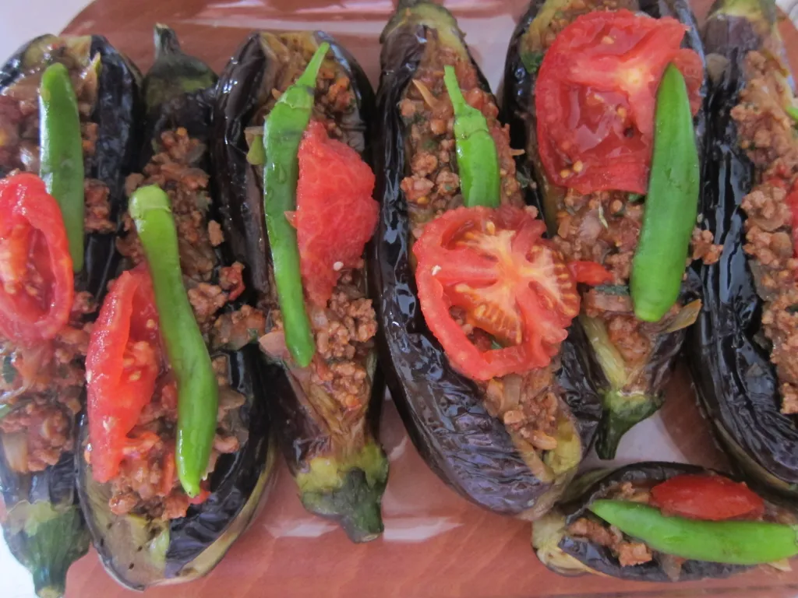

Karnıyarık or Stuffed Aubergines Baked in the Oven

Description
For those of us who live here in Turkey, this is yet another beloved patlıcan dish that we are all familiar with.Use the end-of-summer aubergines quickly before they disappear, not to mention the last of the fabulous.
Ingredients
- 4 large aubergines
- 4 garlic cloves, crushed with salt
- Juice of ½ lemon
- 2 tbsp olive oil
- 2 tbsp creamy yogurt
Steps
- Grill the aubergines, rotating from time to time. Cook till charred and blistered.
- When cool enough to handle, strip off the blackened skin. Roughly chop the soft inner flesh and put in a colander, allowing any bitter juices to drain away.
- In a bowl, combine the aubergine, garlic, lemon juice, olive oil and yogurt. Season with salt and pepper and mash into the consistency of a purée. You could use the food processor if you prefer a smoother consistency. Refrigerate until required but ideally serve at room temperature.